Project Hail Mary, full of Grace
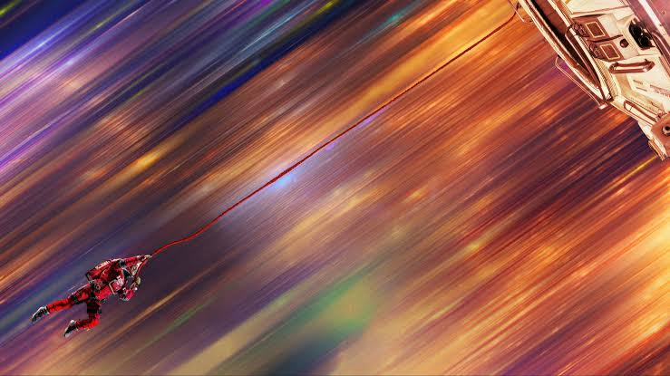
I’ve been trying to read more books.
For the past few months, I’ve been reading more. For the past few months, I’ve been trying to read more. I needed something to keep me busy that wasn’t looking at a screen all day so I’ve been trying to read more books. I haven’t read books regularly since 7th grade. I got into the Wheel of Time, you know, something casual to get me back into fantasy over a really long period of time. But you know, in between books I like to take breaks. It was in one of those breaks that read Project Hail Mary by Andy Weir.
My twitter was going nuts over the movie about to come out so I got curious. Ryan Gosling, who I really liked in La La Land. Daniel Pemberton doing music, composer for the Spiderverse films, that I adore. The score was awesome in both. Written by Drew Goddard, the guy who wrote the script for Weir’s other book, “The Martian”, Cloverfield and Cabin in the Woods. And finally, directed by Phil Lord and Chris Miller writers of How I Met Your Mother Season 1 Episode 3 “Sweet Taste of Liberty”, directors of “Cloudy with a Chance of Meatballs”, the “Brooklyn Nine-Nine” Pilot and producers on both the Spider Verse films. All very interesting choices that made me curious.
Some days later I saw the synopsis for the book, and I was hooked for real.
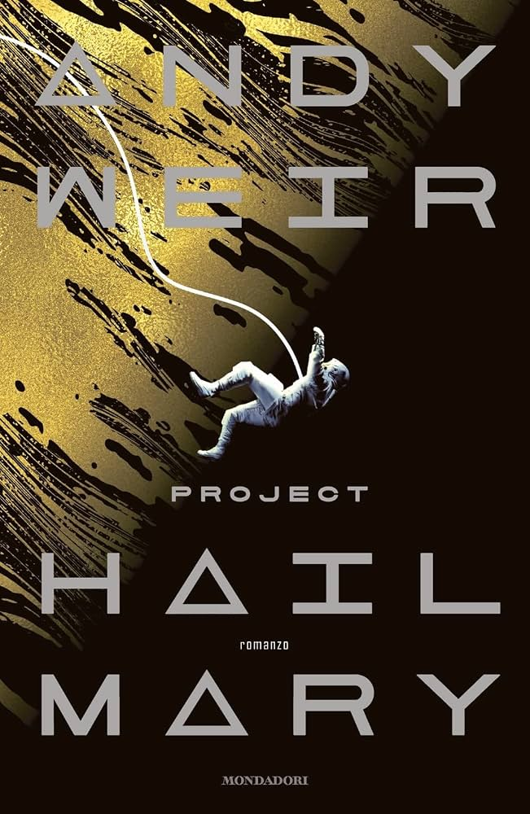
“The sole survivor on a desperate, last-chance mission—and if he fails, humanity and Earth itself will perish. Except that right now, he doesn’t know that. He can’t even remember his own name, let alone the nature of his assignment or how to complete it.” It seemed like a cool mystery, from an amnesiac astronaut that would be cool to go into blind. So that’s what I did. I refrained from reading or watching anything else about it, so I could be extra surprised with the twists and turns of the story.
On the morning of February 25th, 2026, I started reading Project Hail Mary. I finished on February 26th, 2026, at 3:45 AM. I regret nothing. This is the kind of book that grabs you by the heart and keeps you invested from start to finish. Andy Weir wrote an incredible story about friendship, bravery and hope.
The movie, which came out a few weeks later, is an incredibly successful adaptation that replaces the math and curiosity in the use of the scientific method for grand spectacle and beautiful writing for a more emotionally driven story. It’s a story about hope, optimism, friendship and science.
In order to vent my love for this movie and book, I need to go into spoilers. So take this as your warning. Wait, I can do better than that…
SPOILER WARNING
The Story
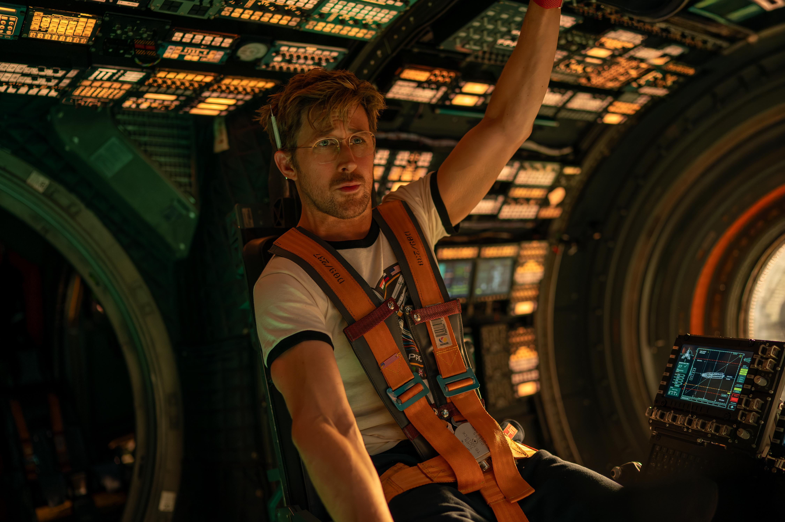
The book revolves around small micro-organisms called Astrophage that are absorbing energy from the Sun causing it to dim. This obviously becomes a huge problem since it could mean the end of life on Earth. So, Global governments get together and try to find an answer for why this is happening and how we can prevent it.
The first few chapters are super fun. It’s just the protagonist walking around the Hail Mary (the space station he wakes up stranded millions of miles away from Earth), confused, trying to figure out where he is and what is going on and it’s a lot of fun going into it blind. I tried forming my own theories and was curious too. In the movie, the camera follows him around as he explores different rooms. The feeling I got was like I was watching a hamster trying to find his way out of a maze. It doesn’t know where it is so it keeps poking around curiously and checking what everything is. This bit takes significantly longer in the book. The reveal of being inside a space station millions of miles away from Earth takes a few chapters of him trying to understand how to open doors, using math to find out where he is and talking to the ship’s AI. To open the door that leads outside the sleeping chambers, Grace needs to provide the AI with his own name that he can’t remember. This triggers the first flashback.
Ryland Grace (Ryan Gosling), a middle-school science teacher that has been disparaged by the science community for acting all high and mighty about water based lifeforms and calling his colleagues idiots. He is the cool teacher, he plays games with his students, tries to motivate them and make them see that science is fun. In the flashbacks we learn about how some tiny micro organisms are slowly dimming the sun somehow in a specific area of the solar system designated the Petrova line. One day, after one of his classes Grace is confronted by Eva Stratt portrayed by Sandra Hüller in the film, the person in charge of figuring out what is the Petrova line, why it is dimming the sun and how to save humanity. She tells Grace that as a microbiologist that thought there could be life without water, he could try exploring the small micro-organisms they got from Venus.
Grace over time makes more discoveries. He tests his theories with experiments with stuff he finds in home depot, glued together with duct tape. Like an experiment for his classroom. Andy Weir writes his thought process in a way that is simple to follow and to understand why he is doing what he’s doing. Making it a comfortable and easy read.
In the present, Grace finds the two other astronauts that died during the trip. Grace now has someone to live up to who is much closer to him, the two crewmates who lost their lives in the desperate chance to help humanity. Their funerals raise the loneliness in the narrative as Grace feels even more alone than he already was.
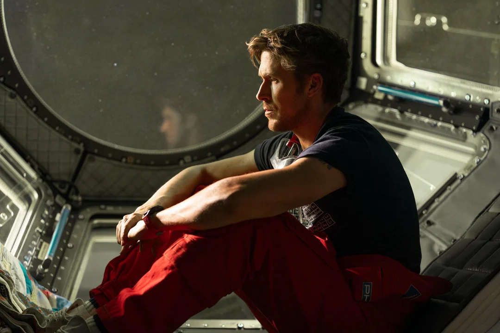
In the book, after figuring out what Astrophage is, Grace goes back to teaching for a while and that is when he realizes that he needs to help. For his kids, his students, his kids. He goes back to Stratt and begs to let him work. For his kids, his students. In the film this scene is cut and Grace is directly transported to the middle of the Pacific Ocean where a group of researchers are working in a military aircraft carrier.
Here enters the titular Project Hail Mary, the whole world nations are getting together in a common goal for humanity’s survival. Led by Stratt, all of the most brilliant minds on the planet get together to learn as much as possible about how Astrophage works and pull together to build the Hail Mary, a rocket that will send a team of 3 astronauts to Tau Ceti a star 12 light-years away that doesn’t seem to be affected by Astrophage. According to the plan, the astronauts would go to Tau Ceti, figure out why it is surviving and then send back answers to Earth, hopefully saving the world. Grace would end up leading the science team as the expert in Astrophage that would instruct astronauts on how to deal with them.
Back at Tau Ceti, Grace on board of the finished Hail Mary, experiences Zero G for the first time (with a signature Gosling screech). And then meets Blip-A. A giant alien spacecraft which is also orbiting Tau Ceti. The Blip-A makes contact with the Hail Mary by sending a small vessel with a message that Grace catches after going on his first spacewalk. Using a set of wires the team was able to simulate the zero gravity look in a set outside of the ship too. It took 11 takes to get it. Grace uses the Hail Mary’s Centrifuge to create some mock gravity in the ship to use the lab. Here enters one of my favorite tracks [Centrifuge]. It was so beautiful seeing the two ships dancing around in the void of space. And the music evokes that whimsical feel to it. I especially love the choir. It sounds beautiful. The Blip-A and the Hail Mary trade items and messages for a while until we’re finally ready for first contact. Using a bridge the two ships connect together.
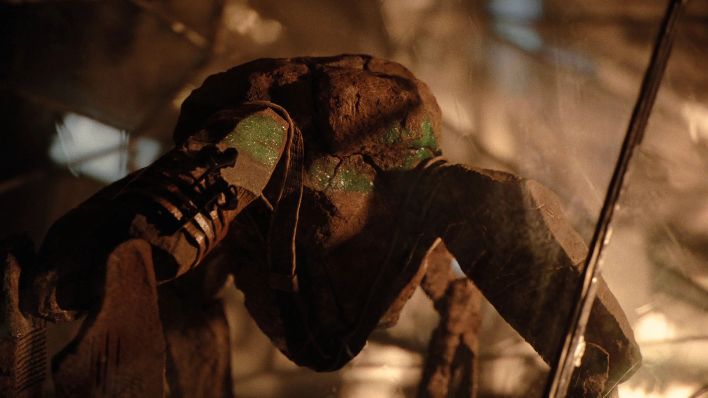
We finally meet Rocky. A spider-like rock creature that communicates using melodic sounds and vibrations that is also searching for a solution for his own Astrophage problem. So, just like in Dennis Villeneuve's Arrival. Grace needs to find a way to understand and be able to communicate with Rocky so they can work together to save both of their stars.
The book goes more in depth than the movie of course but, essentially, they start talking via math. Remember the scene in La La Land where Sebastian (also Ryan Gosling) explains jazz? How a bunch of musicians from multiple countries that couldn’t understand each other were able to communicate via music… This would be the same but with scientists instead of musicians and math instead of music.
The first thing they share between each other is clocks. Rocky’s species, Eridians, unlike humans use numbers in base 6. This is a small detail that the movie doesn’t get into, but I thought it was super interesting. We count 0,1,2,3,4,5,6,7,8,9,10. Eridians count 0,1,2,3,4,5,10,11,12,13,14,15,20 and so on. This is fun. I liked that the other species uses a completely different way of counting. Then they figure out how to communicate some other words like Yes and No. And eventually full sentences.
Over time Grace learns that actually Eridians aren’t that developed in space travel. They don’t know about radiation or relativity. In the book, this is the actual reason for them having extra Astrophage, they thought it would take longer than it actually did.
Rocky and Grace make their way to analyse Astophage on Tau Ceti’s Petrova Line while bonding together on the way. In the movie, Grace uses the Metal Health/Don’t Go Crazy Room with a bunch of LED screens to show Rocky what earth is like, shows him the Rocky movies, beaches and trees. It’s great to see them bond. A whole lot of fun.
In the book, we take a look at some flashbacks to the preparations necessary for Earth to survive and to send the Hail Mary to space. These were cut from the film but are some of my favorite scenes.They built up the stakes way higher than we see in the movie. We learn just how much power Stratt has, it goes beyond just moving scientists to an aircarrier. Like the time Stratt and Grace went to an Australian prison to get information from a guy on how to cover most of the Sahara desert with Astrophage farms to breed as many as possible, as fast as possible. Or the time Stratt went to court to fight a copyright claim from essentially every software, book, and movie ever made to put it in the Hail Mary. That one is specially great because she basically just shows up and says: “Fuck you, I’m saving humanity. These astronauts are going to space and may need everything humanity has ever created. I will do whatever I want. Stop wasting my time with this.” Incredibly badass. Or the time she blew up a Nuclear Bomb under Antarctica to release a ton of greenhouse gases into the atmosphere to counteract the Earth’s cooling as the sun dims. I wish any of these scenes had made it to the movie, it would have been cool to see. But instead, I got a new, original scene that fits way better with this version of the character.
In a bonding moment, Stratt and Grace have a heart to heart where Grace is finding it hard to believe how anyone can party when they are trying to prepare for their own deaths. In response to this, Stratt grabs the microphone and sings Harry Styles’ “Sign of the Times”.
Arriving at the Petrova Line, Rocky and Grace take some samples of the Astrophage. The movie takes some time in this moment to give us this glorious shot of Grace having a moment among the red dots. The duo named the planet they are orbiting Adrien, honoring Rocky’s mate. It’s time to go fishing. Rocky and Grace figure out the reason there are no Astrophage on Tau Ceti is the presence of predators on the surface of planet Adrian. They decide to use a chain to fish the biosphere out of there without going into the atmosphere. This is the “Lock the fuck in” moment. What follows is the moment where butts clench and people shut the fuck up to witness anxiety and stress to the highest level. Queue the music [Let’s go fishing] in all its grandiose glory and we’re ready to go. The escalating tension, the colours, the directing of actions so I can actually follow what is going on on screen, these things make this scene super tense to watch. I like to be able to see what’s going on in the movies I watch. I really appreciate the use of bright colours in this and that I can have some sense of direction to understand where Grace is on the ship and where he needs to move. The scene builds tension over time. The task is dangerous but Rocky and Grace have it under control.
They tilt the ship and lower it into the atmosphere and essentially use this giant flail to fish for micro-organisms in Adrian’s atmosphere. This is also where Grace grows a spine. He jumps to grab the collector, actually showing some bravery. Then, Grace brings it inside and pilots the ship back into orbit. Except he doesn’t and the ship starts crash landing. It all goes downhill from here. The alarms beep, the lights blink, everything falls. Grace eventually goes unconscious and Rocky leaves his atmosphere and drags Grace to the medical bed so the on board robot that took care of Grace during the trip can try to heal him. In the book, after Grace wakes up, he is the one who carries Rocky back to his side of the ship. He also attempts a makeshift surgery that, according to Rocky, could have killed him. He gets a pretty nasty and way bigger scar on his body for this. They essentially save each other. I prefer the movie version, the surgery on Rocky did hinder the pace of the story.
This is when we get a flashback to when shit hit the fan, Shapiro and DuBois explode leaving an empty seat on the Hail Mary, Grace is forced to consider volunteering to go. I love the scene after the flashback when Grace watches Rocky sleep. When Rocky wakes up, the hug makes a comeback. The reluctant Rocky that didn’t understand the concept is now fine with it. I don’t know if it is because he understands it or because he thinks it’s what Grace needs in that moment but either way, very cute.
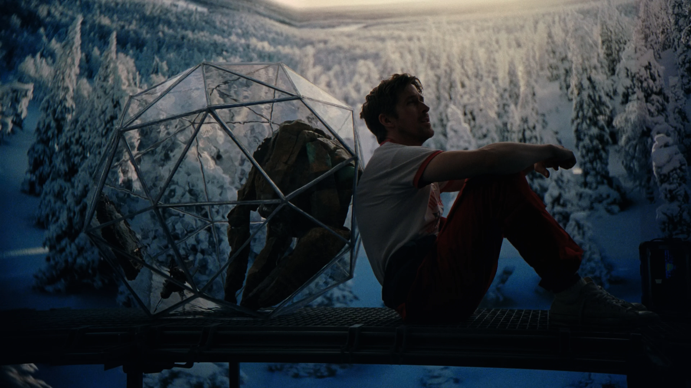
After this, they investigate the Taumoeba they recovered from Adrian. This new organism thingy, actually eats Astrophage and could in theory kill the Astrophage killing their stars. They need to breed it to survive the atmosphere of their respective solar systems and they do that by using Xenonite containers.
The exploration of Rocky’s ship is original to the film. Grace never goes inside Rocky’s ship in the book. I do like the addition of it though. I like the cords that the crew can vibrate to communicate with each other or send out commands, I like the different texture crystals on the hallway and the parallel with the golden plates on the Hail Mary with these symbols in the Bip-A.
In the final flashback, Grace is involuntarily sent on this mission. Reading the book this recontextualized the whole story. He didn’t actually volunteer. He isn’t a hero, he’s just some guy, forced against his will to go. I think the book works this reveal better. The movie plants the seeds of “I wouldn’t want to go on that mission” just as the book does but I think in the book I felt there could be some sort of rise to the occasion for Grace that he would volunteer to go on the mission. That didn’t happen.
The two friends say goodbye and leave each other on their way to their respective planets. The goodbye feels heartfelt, genuine and I like how it lingers on them not really wanting to say goodbye. When Grace realizes that Taumoeba is escaping the containers he and Rocky built out of Xenonite, he realizes that this could mean that Rocky would be out of fuel soon and won’t make it to Erid. So, finally, he becomes the hero, sends the Beatles to Earth and makes his way to Rocky to save him. To the sound of “Two of Us” by the Beatles, he returns to save his friend and together they make their way to Erid.
Our story ends with Grace living in a human habitat in Erid, where Rocky visits often, teaching a new generation of Eridian children. The book ending is pretty much the same. We don’t get to see what happens on Earth in the book. It’s left open-ended and I think I prefer it to the book Epilogue with Stratt in the ice. The only hint that we get to how Earth is doing is Rocky telling Grace that the Sun is getting brighter again, meaning the Beatles arrived safely. I like how Grace goes back to teaching. In the book he uses a keyboard to talk to Eridians in Eridian. Also, Rocky now doesn’t use the computer (like in the film) but his sentences translated to us readers are more grammatically coherent which is a fun little detail. At the end of the day, it’s a cute ending. He didn’t die alone, he made a friend and sacrificed everything for him.
Adaptation
As I read the book, some questions kept coming up in my head. How will they adapt this? What will Rock look like? How will they show the centrifuge? How much of the science will they keep? Well, I can say that movie did great. Lord and Miller seem to know and understand how to get the cartoonish out of live action like in 21 Jump Street (another movie they directed). Their experience in Cloudy with a Chance of Meatballs, the Spider Verse movies and the Lego films always look very colourful and fun.
As far as adaptations go, I would say this was a very successful one. The book is told in a first person perspective most of the time only on one or two occasions switching to a third person to follow Stratt. Because of this, there is a lot of inner monologue from Grace. Weir likes to give us his thought process and carefully tells us what math he is doing and why. As a middle school science teacher, it makes sense that Grace is able to carefully explain his thought process, probably for that reason, the science in the novel is pretty easy to follow along and isn’t too jarring. But it is scarily accurate. Weir went to incredible lengths to make sure the math in his book was correct, taking into account the fuel the ship had, how much propulsion it could have, how long it takes to get from one place to another, how much time passes, etc.It's nuts, I appreciate the dedication. I don’t even know what some of these things are. He calculated Rocky’s muscle strength? It’s so overkill, so detailed. It's amazing. There is absolutely no reason to go into this much detail but it makes the whole thing a lot more impressive.
To prevent overly long monologues, the directors opted for using a video journal/ message similar to the ones used in The Martian (2015). Also, Carl is given some more personality than in the book so Grace can talk to him and explain his thought process as he experiments with Astrophage in the first act.
All in all, I would call this a pretty faithful adaptation to the original changing only the necessary and adding new elements taking advantage of the cinematic experience.
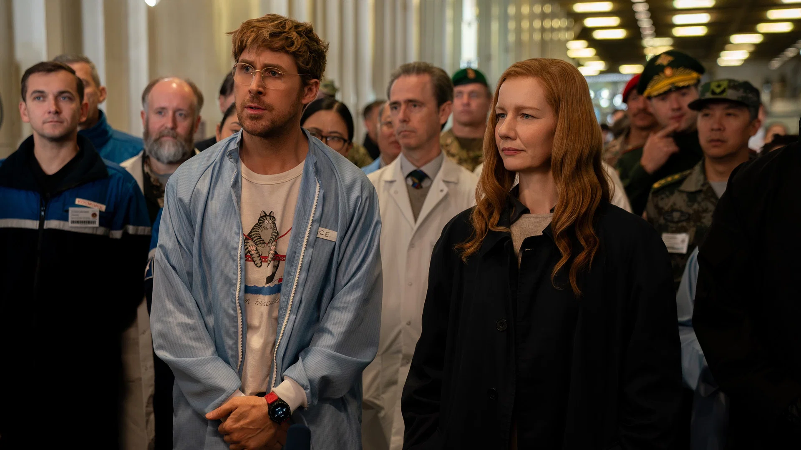
Critiques
I want to get the things I didn’t like as much out of the way early. I love this movie but still... Nothing can ever be truly perfect right?
My only complaint from the book’s original story is about the other crew members who were supposed to go with Grace. In the past, we met the original crewmembers of the Hail Mary.And honestly, I wanted more of them. In the first few chapters, when Grace’s memory is still a little foggy, he mourns the death of Ilyukhina and Yao. He mentions how she was funny and how he was brave but then the time we spend with them in the book is limited. We spend more time with DuBois and Annie Shapiro, the two who died in the explosion. I get why they would be cut from the movie; But as a reader I think it would have made their deaths more impactful if I had learnt more about them.
In the movie, they don’t serve for much either. In the book they work to build the mystery of “Why is Ryland alone? Why is he alive and the others dead?” mystery. The book introduces the idea of a gene in human DNA that would make some people more susceptible to survive long comas, that would be necessary to survive the long journey to Tau Ceti. So, the people selected for the mission would be selected from an even smaller pool of qualified humans. This would eventually influence the choice to make Grace the last resort on the mission. In the movie this is completely missing.
I just want to take a second to talk about Shapiro and DuBois, the science astronaut and his backup respectively. In the book they are fucking. And they are very open about the fact they are fucking. They straight up announce it to Grace like: “FYI Shapiro and I are in a sexual relationship.” Unprompted and very bluntly. It’s kind of funny. Since they were the two science experts on the original and the backup crew this little element would through the book keep the question open of why did neither of them go? I thought that maybe Shapiro would get pregnant and then they would decide to stay on Earth to raise their child or something. Or maybe, realizing their feelings for each other would make them unwilling to be separated and then they would back out of the expedition. So, the big explosion truly was a twist for me. I really did not see it coming. I was genuinely surprised. This revelation doesn’t hit as hard in the movie but in the book it was legitimately shocking. In the movie this misdirection is completely absent but the other astronauts aren’t given as much emphasis throughout the narrative either.
When the film came out, one of the things I kept hearing and reading was: “How does it hold up next to Interstellar? Or Gravity? Or Arrival?”. I think trying to see if this movie is better than that movie is silly. That being said, comparison is necessary to have some sort of frame of reference to what we already know. So, I believe Project Hail Mary is a reverse Interstellar.
Interstellar is the story of a brave man, sent by a pessimist to the stars under the pretence that he would find some solution to a problem on Earth that would cause the extinction of humanity. He leaves behind someone who loves him hoping their bond will bring them back.
Project Hail Mary, is the story of a coward, sent by an optimist (even if forced) to the stars to find some solution to a problem on Earth that would cause the extinction of humanity. He leaves behind no one leaving himself open to a new bond teaching him to be brave.
Visually, both are beautiful movies that leave the audience in awe with their spectacle and wonder. I would say however that Interstellar focuses more on what is gigantic and grandiose about the unknown of space (with black holes and singularities and such) and Hail Mary tries to see the beauty in simple solar systems and doesn’t need to explore those ideas either. he optimism probably is the most emphasised in the scene where Grace tells Rocky he is going to die. In Interstellar, most reveals are devastating, in this it's hopeful. I wanna talk about this scene now. I love this scene. I love the lighting, the acting from both parts, it's all so so great. It’s a heartfelt moment that Ryan Gosling absolutely nails. I love the hug afterwards. It pays off that Grace will probably die alone in space, an idea that was set at the start of the story diverting expectations and going back to a place of giving us hope that maybe he might make it after all. I don’t know if Project Hail Mary will stand on the same pedestal as some of the great sci-fi films in the eyes of the public, but I certainly believe that to me at least it does.
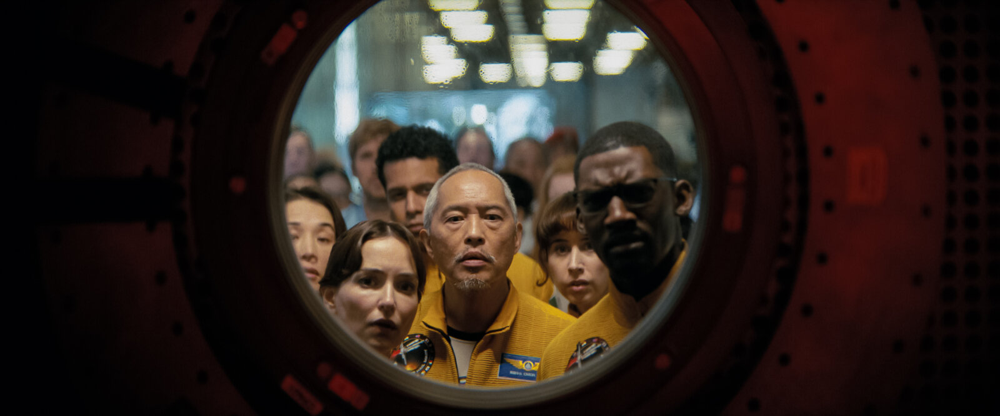
Cast
Ryan Gosling is Rayland Grace. I had a physics teacher in high school that would go to the front of the class and tell us to read the textbook and call it a day. I. HATED. That man. I can read books at home too, why do you have to be here at all? And then when I had questions, he would say: “Read the manual” what the hell, what are you doing here? What exactly is your job? He was such a dick about it too. Acting all high and mighty about things and looking down at us when we got things wrong. In eleventh grade I would cycle between him and a second teacher that would teach those in the class that were underperforming. So I would start in this guy’s class, and my grades would drop putting me in the other class where, with an actual reliable teacher, my grades would rise bringing me back to his class where they would drop again. And it was super demotivating. I used to love science. All because I used to have an amazing middle school science teacher.
He would make jokes, motivate us to ask questions, and use clever metaphors to facilitate our understanding of the material and make silly jokes to keep us engaged and motivated. I remember one day, he walked in the classroom and just kicked the trash can. We all got really quiet, he stared at us for a while and then said: “The Big Bang”. He then used the scattered trash to explain how the universe was constantly expanding, like the trash expanding across the floor, he used a paper ball to explain how gravity compressed mass into stars and planets. And we, as a class, were so stunned and so entertained that it kept us interested. I remember learning about constellations and telling him about this game I saw on YouTube that allowed you to simulate the night sky on different places on Earth and how excited he was when the next day I told him I learnt that the north star wasn’t in the true North but actually slightly to the side. You could tell he loved teaching and he loved inspiring kids.
When I imagined Ryland Grace, I imagined that man. A really good science teacher that loves his students and loves inspiring them. He’s just some guy and that is what makes him a relatable protagonist. Gosling manages to bring his charm, silliness and emotion to the character pretty faithfully to the book. His quirks and silly screams work in his favor for a relatable protagonist. I was pretty worried since a lot of the time, he would need to act by himself, if he would need to be able to carry the audience by himself. He had some clumsiness and charm in other roles such as Colt (The Fall Guy (2024)) or as Holland March (The Nice Guys (2016)) and he is a great actor for the heavier scenes such as the funeral at the start of the movie, the desperation and loneliness at finding out he is lost in space and on the other side of the spectrum, the joy of finding out he might actually survive thanks to Rocky’s fuel. He makes a wonderful performance.
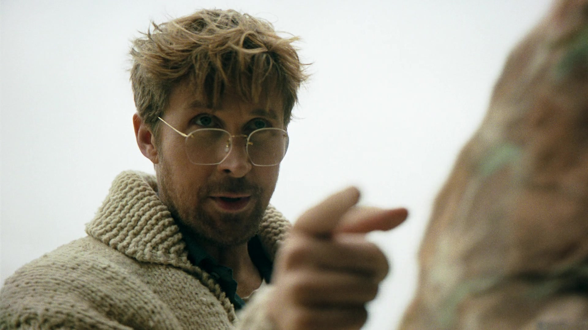
I must now give props to Lionel Boyce as Carl. I love his scenes with Ryan buying supplies at Home Depot to the sound of Miriam Makeba’s “Pata Pata”. It’s a lot of fun and their banter is a fun little preview of shenanigans to come with Rocky. Carl is in the book but not nearly this expressive or with this much personality. Apparently Lionel Boyce was only supposed to stay on set for a week but they liked him so much he ended up staying for a whole month. In the book Grace just builds his closet with Carl’s help and with some other guard that is such a buzzkill that Grace never bothers to learn his name. Giving Grace this friend right at the start of the film to interact with gives the audience a little sneak peak at what kind of comedy is to be expected from the movie. It also provides a way to talk to the audience and explain what he’s doing without using some inner monologue, which is what the book does. Book Carl has no lines. His presence in the movie is short but I enjoyed it a lot.
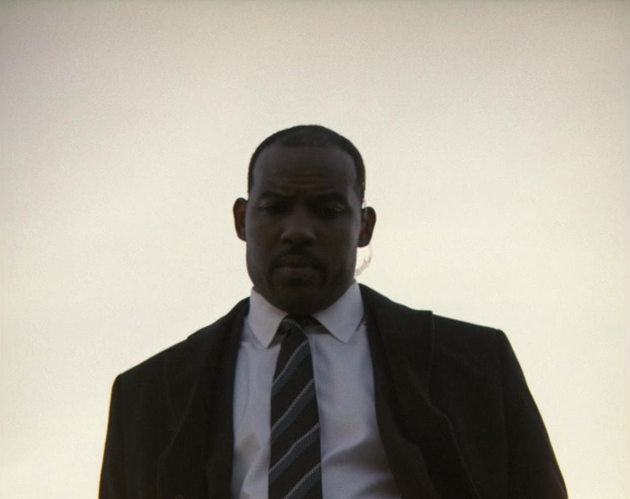
Sandra Hüller brings so much to this film and so much to this character that can’t be understated. Stratt in the book is cold, harsh and direct. Completely focused on her mission and cares very little for anything or anyone else. She is a very complex character and super interesting to follow around, with unlimited power she can do whatever she sees as necessary to save humanity. Stratt in the movie feels more human. She clearly cares a lot about Ryland. There is something between them. I wouldn’t call it romantic tension necessarily, but I can see how some might see it that way. I see it more like two people who don’t know how to be friends nor can they give themselves the luxury to try understanding each other due to the responsibility of their work. I love their chemistry. Sadly, some of my favourite Stratt moments from the book didn’t make it to the big screen but instead of those I got a great rendition of “Sign of the Times”.
The lyrics fit perfectly with the themes of the movie and the message she wants to send to Grace. That you have to wipe your tears and do what is necessary for humanity’s survival. The scene works so well and brings so much depth to the character that I can’t say I see her as the same character from the book. It’s a great performance from Sandra Huller and she absolutely nails it. It’s amazing to learn that this scene was essentially made up in a day. According to Ryan Gosling, he heard Sandra singing and begged her to sing in the film. The next day she chose the song and shot the scene. It baffles me that this scene that became the core of who Eva Stratt is as a character was essentially made on a whim and shows the deep understanding that Huller has of the character and how great an actress she is being able to pull that nuanced performance out of thin hair. I love this new Stratt. I love the book Stratt but I love the way she chooses to play Stratt. A major difference between the two is when Stratt confronts Grace and decides to put him into an induced coma on the Hail Mary against his will.
In the book, Stratt is very accusatory. She gets angry, and yells at Grace, calls him a coward. She’s way harsher than in the movie. She is almost villainous in the way she acts. I genuinely hated her for this. It fit so much with the character in the book who pushed everything and everyone around to fit her needs. In the movie however, she is almost choked up. You can see how she actually doesn’t want to send Grace but just doesn’t see any better option. It’s a little sad and I can say I feel more inclined to understand her decision. We’ll get back to that scene; we first need to go back to checking in on Rocky and Grace at Tau Ceti’s Petrova Line.
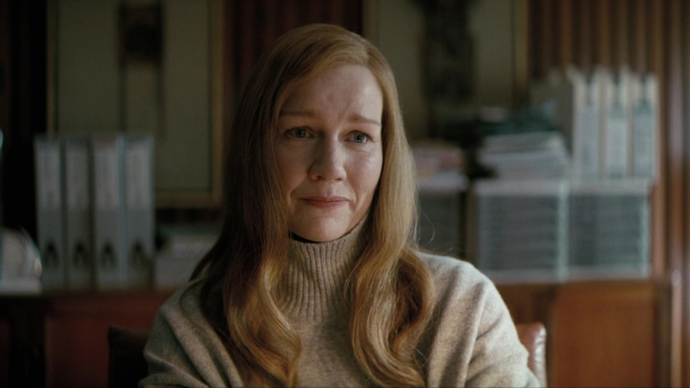
Rocky
Rocky is such a fundamental part of the adaptation that he deserves his own part. There are a lot of differences between the book Rocky and the movie Rocky. Book Rocky is described as a pentagon with legs. Also, book Rocky wears clothes. He wears these overalls and belts to carry tools in. I assume they took away Rocky’s clothes to simplify the design for the puppet that would become movie Rocky. This design trades clothes for carvings. I do enjoy the idea of Eridians carving themselves like tattoos. Carving things about themselves. In commentary they talk about how this is similar to having a family crest tattooed in your forearm. It’s a pretty cool idea. I like the movie Rocky a lot. It’s not how I pictured him in the book but it works. I do like the way he moves like a foreign creature but somewhat natural and odd, I like the little gestures he makes, the knock-knock thing he does when he says “question”. It’s a lot of attention to detail. One of the things that don’t get more attention in the movie is just how smart Rocky is. Unlike Grace, Rocky just does all the math in his head. He also uses human units to make it easier for Grace. He also doesn’t need an English to Eridian translator, he can remember better than humans can. They are smarter than humans, they are just behind in technology. They don’t understand radiation very well, they don’t know relativity, they are just a few decades behind the human race. More than being smart, Rocky is a good friend. It’s a joy to see him on screen and to read about him in the book. He’s kind, quirky and a whole lot of fun. He has a lot of personality and his interactions with Grace are consistently great.
James Ortiz, voice of Rocky and lead puppeteer, brings a lot of charm to the little alien. The progressive expansion of vocabulary, the subtle decrease in the robotic and monotone voice to a more expressive tone works great. The decision to make Rocky a puppet works incredibly well. Giving Ryan Gosling a physical creature, controlled by a team of five puppeteers gives the film a realistic approach that would be way harder to mimic if he was merely speaking to a tennis ball to be replaced in post. During filming, Ortiz was able to use the puppet to improvise with Gosling giving a more natural feel to their conversations. It gives the movie so much charm and it’s a lot of fun to watch. Some shots are actually animation but on set were all recorded with a puppet and replaced in post in more complex shots such as when Rocky moves long distances or moves in a way that would be more complicated for the puppeteers. But scenes like this scene with the measuring tape it’s an actual puppet, no cgi. It’s so great.
The writing truly shines on this relationship, on the jokes, on the banter and the arguing. It’s not just quips being tossed around expecting a laugh from the audience, it feels like two people who are talking to each other naturally and I think the improvisation helped with that. It’s about friendship and seeing that friendship build over time as they learn about each other, learn to communicate with each other and solve problems together is the core of the film. Rocky moves into the Hail Mary and his curiosity about everything on Grace’s ship is so funny “What’s this? Why is this room so messy? What is that? WOW” it’s so charming and fun. Their arguing when planning what to do is especially fun. There is trial and error, they think things over. “How do we do this thing? -We can just do this, no? -OMG you’re so right I didn’t think of that -Well, I did”.
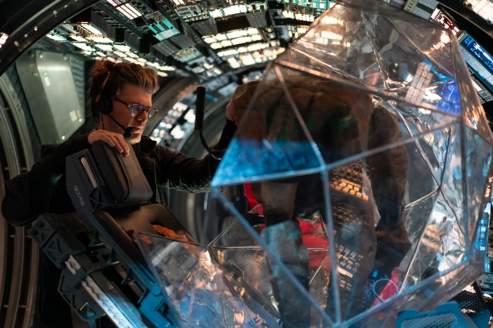
It was great to see the detail put into bringing this character to life with such emotion and passion from everyone involved. The movie also excelled in other moments of the visual style.
Visuals
So much attention to detail is given to how this film looks and how it feels. The first transition from the present to flashback, with crazy blurs and colors was archived by re-recording footage. In the directors’ commentary, Lord and Miller talk about how they shot the footage digitally, projected it on a screen and then re-recorded that projection on a film camera, creating these light distortions. They talk about how they tried playing with light a lot. Especially messing with glass, reflections and distortions. They said that often things like reflections and refractions seem like hindrances to the film making process but they wanted to try to explore and emphasise them. To me it connects to the dimming sunlight as a constant reminder of what is at stake, the sun itself.
All flashbacks on Earth have muted colors, and a different aspect ratio. This works both to distinguish them as flashbacks and to emphasize the fading of the sun, giving the idea that it is already dying. Contrasting with the bright and colorful space, it creates a visual destination that emphasises the themes of the story.
Rocky’s wall of different materials (that was also in the book) left them a lot of room to experiment with light, refractions and reflections and they turned that into a strength giving the movie its own distinct style and character.
here were a few transitions where the camera kept rotating making us feel like we were floating too. Actually that effect repeats itself in transitions a lot in the movie. I like it. It emulates the centrifuge that would eventually become prevalent in the story. that I thoroughly enjoyed. One of those in particular, the camera is focused on Ryan's face as the whole ship rotates around and I thought to myself: “How did they make the ship rotate? Are they actually rotating him? No, his hair isn’t being affected by the gravity on the set? Is it a super strong hair gel? Nope, they spun the whole ship. They spun the whole set around in a rig. That’s fucking cool.
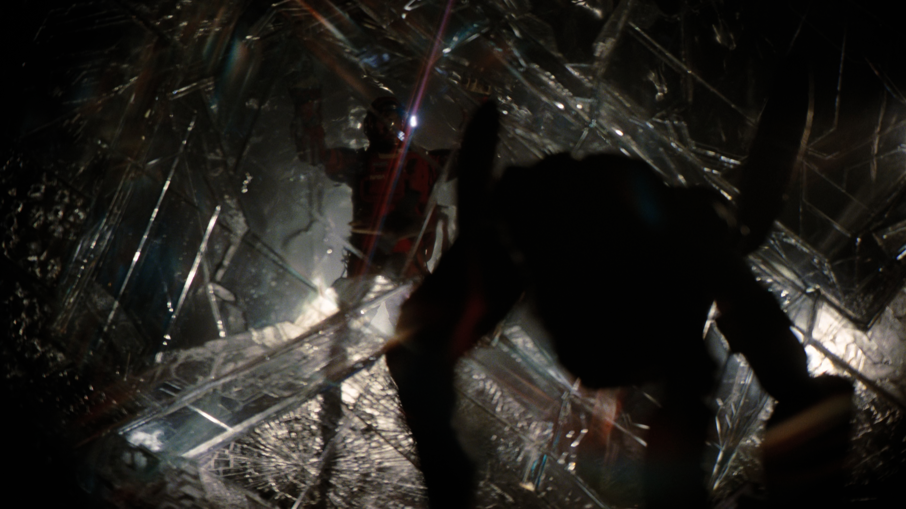
Shots like Grace’s little moment in the Astrophage completely sell the film (hence why it is on all the trailers). Combined with Pemberton’s beautiful score, it is just gorgeous on the big screen. It is overwhelming and a beautiful experience. Going from this shot from planet Adrian to the Astrophage in IR is so jarring it was beautiful. Try to see this movie on the biggest screen you can. It’s the money shot. The one in all the trailers promoting the film and I think it emotionally holds up narratively. In interviews with the directors on how this shot was achieved and its super clever. They used small infrared lights and captured them in an IR camera. I love how the shot is more emotional than visual. The music does a lot of the heavy lifting here in my opinion, but it just works so well. I tried to understand why I love this so much. I think I personally enjoy that progress is being done. I feel like I am being rewarded for believing in Grace and Rocky and in their plan. I like that this is a deeply personal experience for Grace. He’s just having a moment. Rocky doesn’t even understand what is going on. He can’t see colour; this would be just for Grace. And even that, Astrophage are invisible to the naked eye, Grace isn’t actually seeing anything, this is for us, in the audience. It’s just for us. To have a little moment and enjoy the beauty of this for just a little bit.
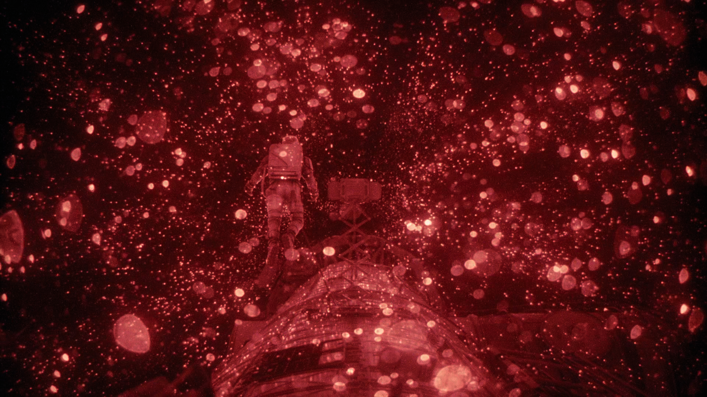
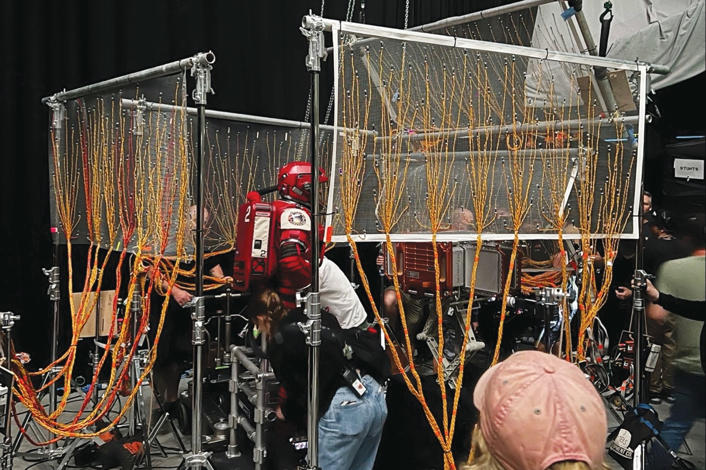
Camera, Sets and Rigs
Watching behind the scenes videos looks so complicated and intricate. I assume there is some sort of CG at play here for the ropes and floating objects (I don’t actually believe they would put a bunch of skittles each tied to their own string floating around) when in space walks or just in zero gravity in general. But Ryan Gosling truly was floating around in a physical Hail Mary set, with wires and what not. It's an impressive dedication to the film and it works so, so well.
The sets are beautifully created with lots of attention to detail. Completely new rooms were added to the Hail Mary from the book in order to create some fun bonding moments between Rocky and Grace and are given care to feeling like a realistic spaceship. The thought that was put into the shift from zero gravity to centrifuge mode and the way it was built into the set is super creative. The book ship is very simplistic. It only has 4 rooms layered on top of each other. Controls, Lab, Dorms, Storage/Fuel Tanks, The movie makes the effort in making it feel like an actual space station. With big hallways and tunnels to navigate through.
The huge “Don’t Go Crazy” room with large screens is not in the book at all. But it works wonders in the movie to visually show us Rocky and Grace bonding. The room frequently closes up on the LEDS. In those scenes the room reminds the astronauts it would make them feel like they are on Earth. To us the viewers, it would remind us we are not.
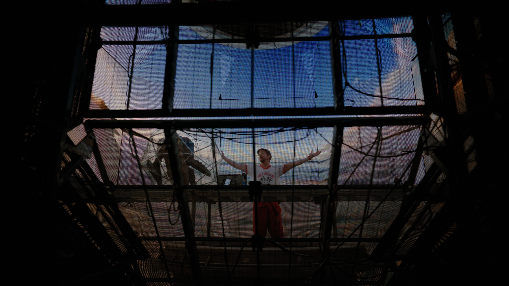
The cockpit has a bunch of screens where a whole team of people made UI’s for. There are multiple buttons in English, Chinese and Russian. Depending on what crewmembers would use them These screens could all be removed individually to fit a camera through so they could get any angle necessary.
The beds spin as the ship spins so as to not disturb other astronauts when going into centrifuge, most items have magnets so they won’t float away and some objects rotate from centrifuge mode to spaceship mode. At the start of the movie, there are things on the wall and ceiling that only make sense later when the set spins. The small details are very fun to spot on multiple viewings.
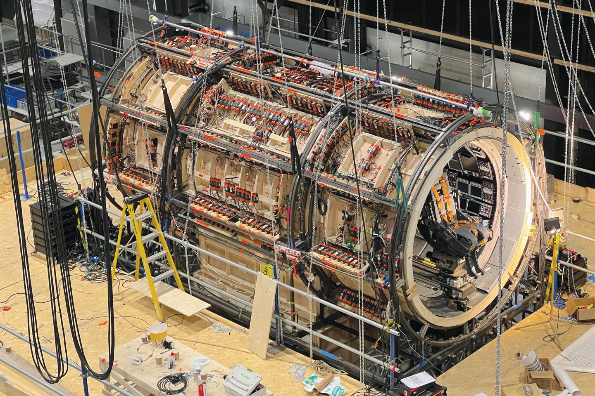
Music
I love this soundtrack. The choir is beautiful every single time. The chimes are subtle, the wavy “wooooo” effects are mysterious and weird. And this is just the first track. So much of the movie's charm can be heard in the soundtrack. Daniel Pemberton has a knack for odd screeching sounds. Like this:
It’s so iconic and gives so much personality to his work. Like this bit that plays right in the first track when Grace looks out the window to the vastness of space for the first time.
Apparently he was asked to use organic sounds, familiar sounds, things that felt like Earth. In the director’s commentary, Chris and Phill talk about Grace being alone in the ship but not alone in the soundtrack. The fate of Earth and eventually Erid behind him (and Rocky). The choir directly connects us to the people on Earth, who put their faith in Grace
Music in this film can be playful (The Message / Learning to Communicate), Curious (Clock Numbers), Exciting (Erratic Maneuverer Detected), at times Mournful (You Were Loved (Burial)) Whimsical (Centrifuge) and mostly gorgeous (A Moment)
I wish I understood more about music so I can understand why I love this so much.
Final Thoughts
I really like this movie. It took over my brain for a better part of three months and I tried to get everyone I know to see it as if I was trying to recruit them for a cult. I like what it has to say about humans coming together with a common goal. I wish it didn’t take an Independence Day like event to get us to work together but… It is what it is. I like the story that talks about how sometimes you need someone who you’re willing to go the extra mile for. What your sacrifice means, what are you willing to give up for those you care for. It’s a beautiful story. Simple, but very well executed. It has charm, it is funny, it is nerdy, clever and beautiful. It takes some magic to mix these things into a movie in the right way. I really really love a movie that pays attention to tiny little things and tiny little details. I like to explore those. I don’t think a direct perfect adaptation of the book with all the cut scenes I mentioned would work as well in a movie. It would feel bloated. But they work very well as an extra for those who read the book.
Project Hail Mary is the product of a group of people working together to archive something beautiful. Both the actual project in the story and the film itself. Hopefully you actually watched the thing when I gave you a spoiler warning. And if you didn’t, you can still do it. It’s a good read and a good watch.
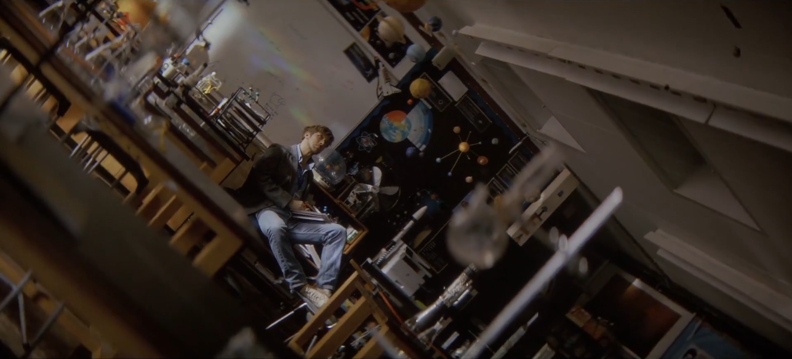
I think I’m done. I said everything I wanted to say about this. Once again, thanks for staying with me through this whole thing. I will try to write more things because once again this was a lot of fun. 👎
~Tomás Ferreira
November 9th, 2026